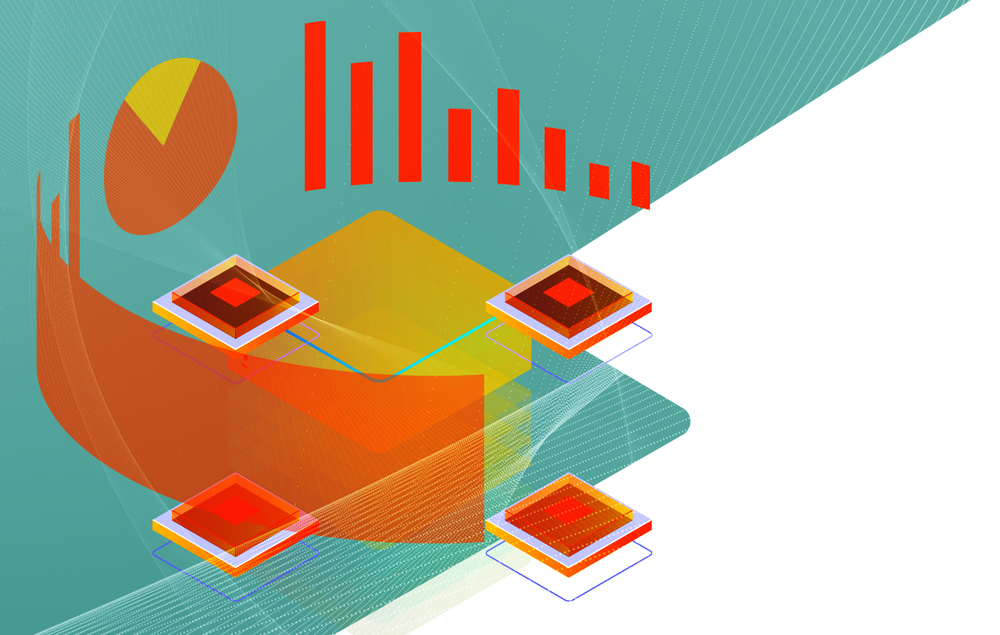

Geralmente os projetos de pesquisa coletam e produzem dados cuja temporalidade é maior do que o período de financiamento e execução. Infelizmente, não é incomum que, passado algum tempo, os pesquisadores que tanto trabalharam para coletar ou produzir dados tenham dificuldade de encontrá-los e reutilizá-los. Isto porque, em várias áreas de pesquisa, a gestão de dados não é uma atividade tão estruturada ao ponto de garantir a sua preservação a longo prazo.
Ainda que o volume de dados perdidos nas instituições de pesquisa seja desconhecido, um estudo de Gibney e Noorden (2013) sobre a disponibilidade dos dados que subsidiam artigos científicos em um campo bastante específico (morfologia de plantas ou animais) nos dá indícios do montante desperdiçado. Ao analisarem 516 artigos, os autores identificaram que, passados 20 anos, 80% deles não estão mais disponíveis. Segundo Gibney e Noorden, as chances de um conjunto de dados que subsidia artigos continuar acessível diminuem 17% ao ano.